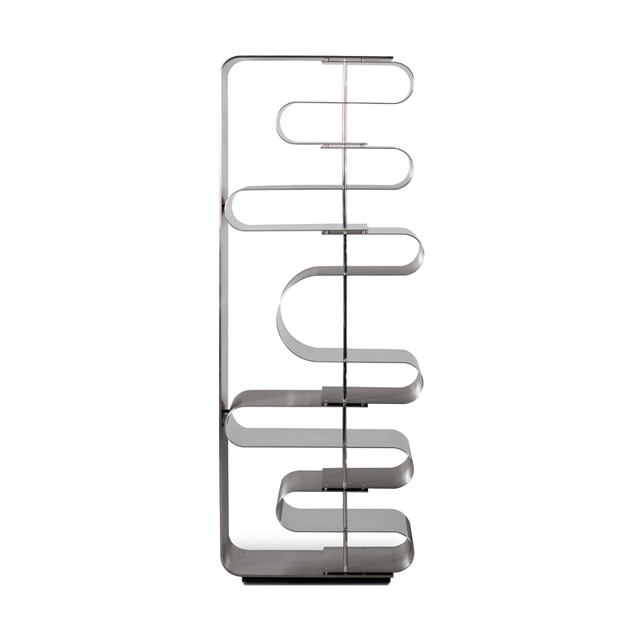
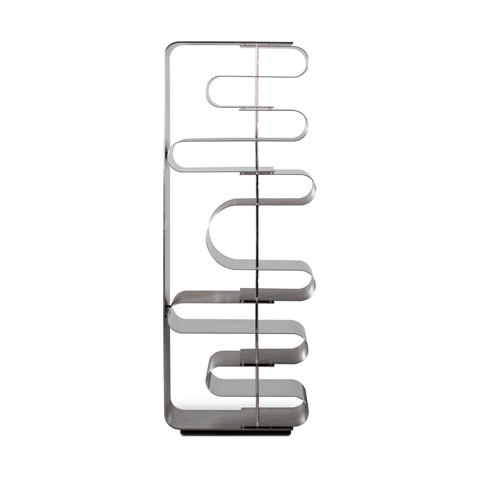

Draga & Aurel
Étagère Dune
Description : Cette bibliothèque-sculpture est une pièce emblématique du design contemporain minimaliste et sculptural. Elle est conçue pour rompre radicalement avec l'orthodoxie du mobilier de rangement conventionnel (composé de montants verticaux et de planches horizontales), embrassant une esthétique fluide, aérienne et architecturale. Son design repose sur le concept fascinant d'un ruban continu de matière qui se plie et se replie sur lui-même en méandres, créant des surfaces de pose en porte-à-faux qui semblent flotter dans l'espace, défiant la gravité avec une élégance rigoureuse.
Structure : Elle est réalisée à partir d'une feuille de métal, probablement de l'acier inoxydable à la finition poli-miroir ou du chrome, travaillée d'un seul tenant ou assemblée sans joints visibles pour assurer cette fluidité monolithique. La surface hautement réfléchissante dématérialise la structure en capturant son environnement et la lumière, lui conférant un aspect luxueux et changeant. De fines tiges métalliques verticales traversent discrètement les plis pour assurer la tension structurelle et le maintien précis de l'espacement entre les niveaux.
Dimensions : H. (Hauteur totale) : 175 cm, L. (Largeur) : 90 cm, P. (Profondeur) : 38 cm.